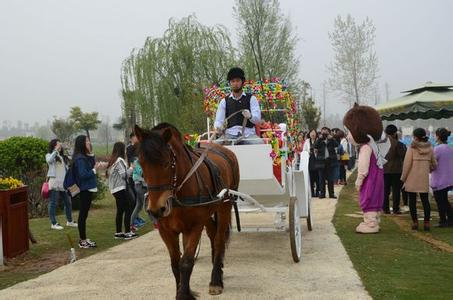

洛阳·中国薰衣草庄园总面积6000多亩，是集旅游观光、特色农业、度假养生、五星级酒店等功能为一体的大型创意观光农业园，是中原地区面积最大，香草品种最多的“爱情”主题庄园。
庄园极力营造浪漫温馨的氛围，建造一系列高雅时尚的场所以承载各类主题活动；旅游产品上，策划覆盖表白、求婚、蜜月、怀旧、置业、亲子等与爱情相关的特色活动，使庄园内的所有活动都打上甜蜜浪漫的标签，让处在各个人生阶段的有情人都能在这里找到属于自己的乐园。
“龙门山下的普罗旺斯，伊水之畔的玫瑰花园”
庄园整体规划为三大主题片区，分别是：以桃花林和腊梅林为主体的“生态农庄”片区；以薰衣草种植为主体的“紫香花田”片区；以玫瑰种植为主体的“玫瑰谷”片区。
庄园极力营造浪漫温馨的氛围，建造一系列高雅时尚的场所以承载各类主题活动；旅游产品上，策划覆盖表白、求婚、蜜月、怀旧、置业、亲子等与爱情相关的特色活动，使庄园内的所有活动都打上甜蜜浪漫的标签，让处在各个人生阶段的有情人都能在这里找到属于自己的乐园。
跑马场占地约30亩，位于庄园综合休闲区域，包括跑马场区及马匹维护及培训区，远期规划在赛马场的南侧建设马术学校、驯马场等项目，推动跑马场的进一步完善，满足马术爱好者骑乘休闲、马术体验、马术学习、马术观赏等需求。
 洛阳·中国薰衣草庄园
卡丁车跑道占地约5000平米，位于庄园情人路北侧。卡丁车（Karting），又称高卡车（Go-Kart）或小型赛车，是一种赛车运动。车子不论大小、功率输出比专业级的要少得多，适合初学者学习及作为休闲之用。卡丁车具有结构简单，安全性高而又极具竞速特性，因此在欧洲及日本等国家极为普及和流行。
游乐场位于停机坪对面，设有旋转木马、过山车、海盗船、迷宫、滑梯等游乐设备。这些游乐项目融参与性、观赏性、娱乐性、趣味性于一体，干净清爽的环境与氛围，让人们可以在其中尽情的嬉戏和释放。
儿童乐园位于庄园咖啡屋附近，设有组合滑梯、动物造型滑梯、秋千、跷跷板、脚踩转筒等游乐设施，小巧别致，色彩明快，安全性强，集健康、安全、刺激、娱乐为一体，可以锻炼孩子手、脑的协调及反应能力，且能培养孩子的胆识。
薰衣草庄园内设有室外高尔夫场与室内高尔夫体验馆，充分满足高尔夫爱好者的不同需求
网球场位于香醍河畔会所外，环境优美，视野开阔。现代网球起源于法国，现在是一项奥运会比赛项目，适合社会各阶层与年龄段人群。
室内游泳池位于香醍河畔一楼，拥有长25米、3泳道标准的恒温泳池，储物柜、更衣室等配套设施，泳池分浅、中、深三个区域，优良水质，同时配有背景音乐，设备一流，是上流社会人士闲暇游泳及社交活动之场所。
室内游泳池
洛阳·中国薰衣草庄园
爱丽丝钢琴餐厅，是世界上造型最独特的建筑之一，建筑主体采用黑色的钢琴造型，而楼梯则设计在透明的大提琴内，装修风格唯美浪漫！餐厅总建筑面积1500平方米，包括二楼主餐厅与三楼露台，可同时容纳200人就餐。
爱丽丝钢琴餐厅
薰衣草主题餐吧位于庄园门口紫韵香街，是一家以经营中餐为主的美食餐厅。餐吧分为上下两层，可供100人同时就餐。餐厅主打各色中式快餐与川湘味农家小炒，以大众消费群体为主，环境清幽，干净卫生，口味纯正，价格低廉。餐厅中座席配有双人式、四人式、沙发式、情人座及家庭式等多种形式，空间宽敞，是您旅行就餐的不二选择！
薰衣草主题餐吧
餐厅位于香醍河畔会所二楼，中式高档装修，风格典雅，环境清幽，内设大厅与特色雅间，菜品齐美，在消费的群体上也涵盖广泛，从中高档到大众消费，从雅间到大厅，不同的环境有不一样的风情，可以接待一般的商务、旅游团宴，也可满足大众消费需求。餐厅精选优良新鲜食材，烹制时除了追求醇正的口感外，兼顾营养的科学配比，为您的饮食健康做到全方位的调理！
餐厅
薰衣草国际度假小镇位于伊滨新区洛阳中国薰衣草庄园内，距龙门石窟风景区4公里，距洛龙区政府9公里，距高铁龙门站7公里，高铁大道及希望大道两条跨河大道自西向东穿过薰衣草庄园，交通十分便捷。
目前，薰衣草小木屋度假村度假村拥有独立别墅44套，其中豪华木屋6套，特色木屋8套，精致木屋28套，总统套房2套，户型分为两室一厅与一室一卫两类，木屋材料采用东北原木，自然原始，独有一番滋味。木屋度假小镇分为四大主题区域：美洲区、非洲区、南欧区和东南亚区，各个木屋按其所属区域风格进行装修，拥有浓郁异域风情！
旺季：04月01日-10月07日 开放时间： 07:30-22:00
10月08日-10月31日 07:30-18:00
淡季：02月01日-03月31日 开放时间： 08:00-18:00
11月01日-次年01月31日 08:00-17:30
线路一:龙门大道--过龙门北桥--沿伊河东岸向北行5公里--沿希望大道前行即到.。
线路二:龙门大道--高铁大道（颐君大厦向东）--过高铁大桥--沿河堤路向南2公里--沿希望大道前行即到。
线路三:开元大道--伊河大桥--右拐沿河堤大道直行4公里--沿希望大道前行即到。